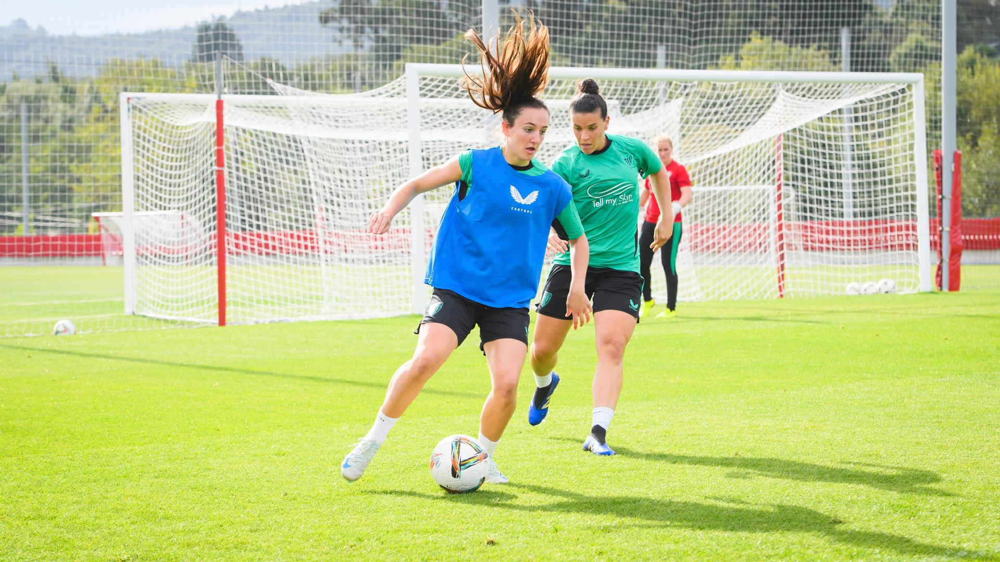

ATHLETIC

1910 Camiseta rojiblanca
El Athletic Club estrena por primera vez su camiseta rojiblanca en un partido amistoso frente al Sporting de Irun en Amute (09/01/1910).
1983 Primera travesía de la Gabarra tras ganar la liga
La Gabarra, símbolo desde entonces de los éxitos del Club, pasea a los campeones por la Ría ante cientos de miles de athleticzales.
2024 El título más ansiado, 40 años después
Bilbao se vuelca cinco días después para ver navegar a La Gabarra tras cuatro décadas de sequía.
Section
Parte médico de Oihan Sancet
El jugador fue sustituido en la primera parte del partido contra el Girona CF
El jugador Oihan Sancet tuvo que ser sustituido en el minuto 42 del partido disputado en Montilivi al sufrir una lesión muscular en el bíceps femoral de su pierna izquierda. Queda pendiente de evolución.

Parte médico de Jone Amezaga
La jugadora tuvo que ser sustituida en el calentamiento previo al RC Deportivo – Athletic Club en Riazor tras un mal gesto y causó bajo para el choque ante las gallegas
La jugadora tuvo que ser sustituida en el calentamiento previo al RC Deportivo – Athletic Club en Riazor tras un mal gesto y causó bajo para el choque ante las gallegas.
Tras las primeras exploraciones realizadas por los Servicios Médicos del Club que descartaron cualquier lesión grave y las pruebas a las que se ha sometido hoy la jugadora se determina que tiene una contusión en la rodilla derecha sin lesiones en los ligamentos asociadas. Queda pendiente de evolución.
Plan de trabajo del Femenino
LUNES, 7 DE OCTUBRE
Descanso
MARTES, 8 DE OCTUBRE
10:30 Entrenamiento
12:30 Gimnasio
MIÉRCOLES, 9 DE OCTUBRE
11:00 Entrenamiento
JUEVES, 10 DE OCTUBRE
11:00 Entrenamiento
VIERNES, 11 DE OCTUBRE
11:00 Entrenamiento
Rueda de prensa de David Aznar
SÁBADO, 12 DE OCTUBRE
11:00 Entrenamiento
DOMINGO, 13 DE OCTUBRE
12:00 J6 Liga F: SD Eibar - Athletic Club (Ipurua)